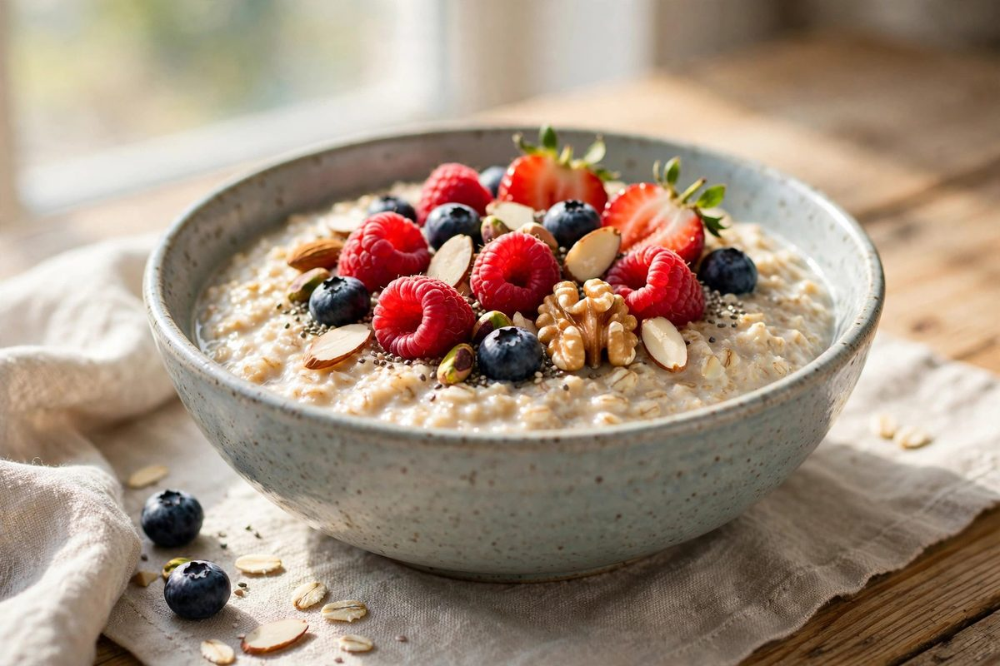

Home » Guides
Gluten-Free Oats

Oats are one of the most confusing foods in a gluten-free diet. They are naturally gluten-free, but they are often grown, harvested, and processed alongside wheat, which contaminates them with gluten. That is why only oats labelled certified gluten-free are safe for people with celiac disease. This guide explains the difference, how to choose safe oats, and the best ways to use them for breakfast, baking, and snacks.
Why ordinary oats are not safe
Oats are naturally free of gluten, but they are usually grown in fields next to wheat, harvested with the same machines, and processed in the same mills. This cross-contact means ordinary oats can contain enough gluten to harm someone with celiac disease. Certified gluten-free oats are grown in dedicated fields, harvested with clean equipment, and tested to make sure they contain less than 20 parts per million of gluten, which is the legal limit for a gluten-free claim. Always look for the words certified gluten-free on the packet, not just gluten-free, which is a weaker claim in some countries.
Choosing certified oats
Certified gluten-free oats are available as rolled oats, jumbo oats, and oat flour. Rolled oats are the most versatile: they work for porridge, baking, and smoothies. Jumbo oats are larger and chewier, and they are good for granola and flapjacks. Oat flour is finely ground and works well in cakes and biscuits. Check the packet for a certification mark from a recognised body, and check the date, because oats can go stale. A small number of people with celiac disease also react to a protein in oats called avenin, so if you feel unwell after eating certified oats, talk to your doctor.
Porridge and overnight oats
Porridge is the simplest way to use oats: cook 40 grams of certified gluten-free oats with 200 millilitres of milk or water for five minutes, and serve with fruit, nuts, or seeds. Overnight oats are made by mixing oats with milk and yoghurt in a jar and leaving them in the fridge overnight: they are ready to eat in the morning, cold or warmed. Add berries, banana, or a spoonful of nut butter for flavour. Oats absorb liquid overnight, so add a splash of milk in the morning if they are too thick. Porridge and overnight oats are filling, cheap, and high in fibre.
Oats in baking and cooking
Oats work well in gluten-free baking. Use them in flapjacks, cookies, muffins, and crumbles, where they add texture and fibre. Grind rolled oats in a blender to make oat flour for cakes and pancakes. Add oats to smoothies for fibre and staying power. Use oats as a coating for chicken or fish instead of breadcrumbs, and add them to meatballs or burgers to help them hold together. Oats are one of the cheapest and most useful gluten-free ingredients, and a bag of certified oats is a good staple to keep in the cupboard.
Oats every day
Oats are one of the cheapest and most useful gluten-free foods, and they work for breakfast, baking, and snacks. Porridge is a good weekday breakfast, overnight oats are handy for busy mornings, and oat cookies and flapjacks make good snacks. Keep a bag of certified gluten-free oats in the cupboard and a bag of oat flour for baking, so you always have them to hand. Try a new oat recipe each week, such as a smoothie with oats, or a crumble topping, so oats never become boring. A daily serving of oats is a simple, healthy habit that is easy to keep.
Frequently Asked Questions
Are all oats gluten-free?
No. Only oats labelled certified gluten-free are safe for celiac disease, because ordinary oats are contaminated with wheat during growing and processing.
Can people with celiac disease eat oats?
Most can eat certified gluten-free oats safely. A small number react to a protein in oats, so introduce them slowly and talk to your doctor if you feel unwell.
What is the difference between rolled oats and oat flour?
Rolled oats are whole flakes, good for porridge and baking. Oat flour is finely ground, good for cakes and pancakes. You can make oat flour by blending rolled oats.
Important: if you have celiac disease or a wheat allergy, always check labels and look for certified gluten-free products. This site is general information only — talk to your doctor or a registered dietitian before changing your diet.